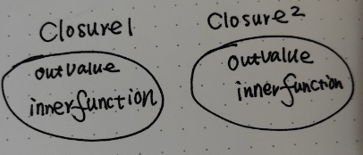

Operationally, a closure is a record storing a function together with an environment.
闭包的概念很抽象，但是我们可以很简单的阐述如何创建一个闭包：
function outerFunction() {
let outValue;
function innterFunction() {
outValue = "assigned by closure";
}
return innerFunction;
}
closure1 = outerFunction(1)
closure2 = outerFunction(2)
在以上的代码中，当我们调用 outerFunction() 时， 闭包就生成了。cloure1 和 clousre2 就是两个闭包，虽然它们指向同一个内部函数。但是却拥有各自的 outValue。 在我们这个例子中， 闭包环境中只有一个变量outValue。因此闭包就像一个魔法气泡一样，把与其相关的执行环境包裹了起来，因此各个闭包互相独立。
由于 closure1 和 clousre2 各自拥有自己的状态outvalue，因此两者可以互不影响。
举个🌰：
在 DOM 编程中， closure1 和 cloure2 可以为两个不同按钮的 click 函数。这样两个按钮的状态可以互不影响，同时工作。
比如，稍加变化后的代码，就可以用于记录两个按钮的点击次数
<!DOCTYPE html>
<html lang="en">
<head>
</head>
<body>
<button type="button" id="button1">Click Me!</button>
<button type="button" id="button2">Click Me!</button>
</body>
<script>
function outerFunction(arg) {
let outValue = 0;
function innerFunction() {
outValue++;
console.log("You clicked me " + outValue + "times!");
}
return innerFunction;
}
let closure1 = outerFunction();
let closure2 = outerFunction();
document.getElementById("button1").addEventListener("click", closure1);
document.getElementById("button2").addEventListener("click", closure2);
</script>
</html>
因此，闭包就是一个内部函数，加上与其相关的变量环境，这些内容像被一个魔法气泡包裹一样，这样就形成了一个闭包。

参考： JavaScript 忍者编程第二版 5.2 节